Shipped, in the open
Things we built.
Real systems with real constraints — finance, privacy, legal tooling and air quality. Every one of these is public, and every one is open to contributors.

baselineShipped, in the open
Real systems with real constraints — finance, privacy, legal tooling and air quality. Every one of these is public, and every one is open to contributors.